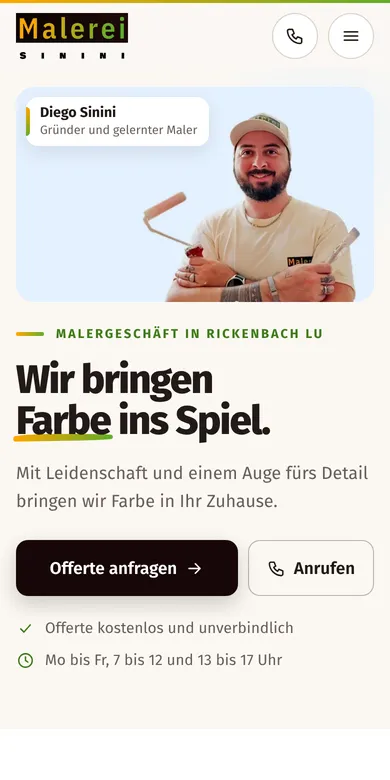

Design A
Ihr Maler aus Rickenbach
Hell, warm und persönlich: Neben Ihrem Leitsatz «Wir bringen Farbe ins Spiel» stehen Sie selbst mit Farbroller vor hellblauem Grund. Gleich danach wechselt Ihr Eingang von vorher zu nachher. Es folgen Ihre sechs Leistungen als Kacheln, eine Farbtonkarte aus Ihren Arbeiten, die Galerie mit Bildunterschriften, Ihre Geschichte und das Offertformular.
- Hell und warm
- Sie im ersten Bild
- Farbtonkarte